Problem Definition
We need to design and implement algorithms that recognize hand shapes or gestures, and create a graphical display that responds to the recognition of the hand shapes or gestures. Thus we need to first extract the features of different guestures and label them so that when we do the test with different guestures, we can compare futures of test gesture with our sample gestures. The result is useful becuase the gesture recognition have some interesting application. For example, we can use gesture as instructions to ask program do something. The anticipated difficulty is how we can get results with good accuracy.
Method and Implementation
First, we need to extract the features of sample gestures. We choose the contour of gesture as the main feature. We get the contour of each sample gesture and label them with feature name. When we present new gesture in front the camera, we get the the contour of testing gesture, and then compare the contour of testing gesture with all sample gesture. Therefore, we return the name of guesture which matchs the testing guesture most
1. skin_detect() We use this function to convert our input image to binary image and then sperate our guesture with background. 2. contour_detect() Next we use the guesture as input and find the contour of the guesture 3. gesture_detect() We use this function to compare our testing guestures with sample guesture. 4. cv2. matchShapes() This function is an Opencv Built-in function which enables us to compare two shapes, or two contours and returns a metric showing the similarity. The lower the result, the better match it is. It is calculated based on the Hu moment values.
Experiments
There are 7 differnt gestures, and I test each gesture 5 times. The detection threshold is 0.2

Results
Results | ||
| Fist | 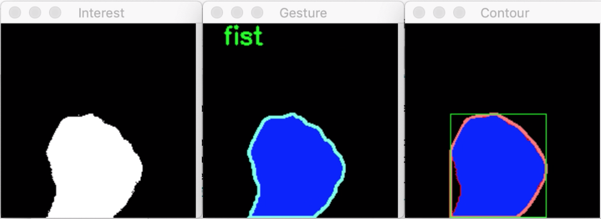 | 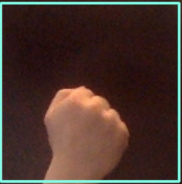 |
| One | 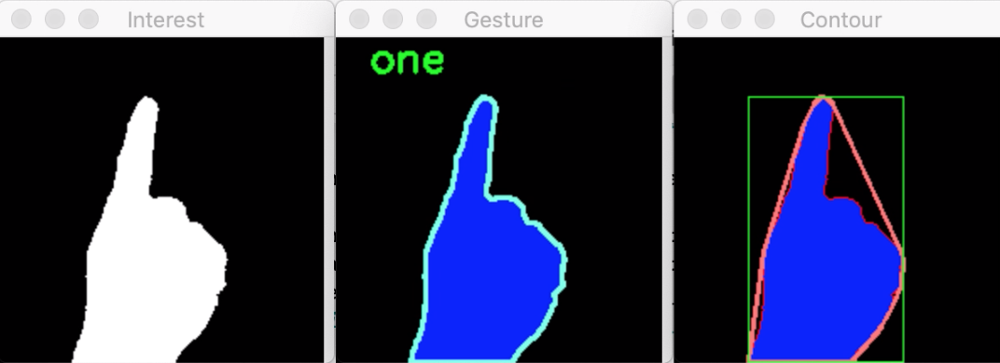 | 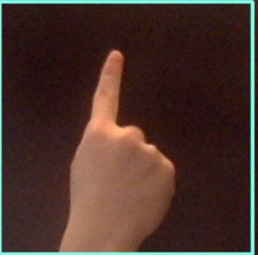 |
| Two | 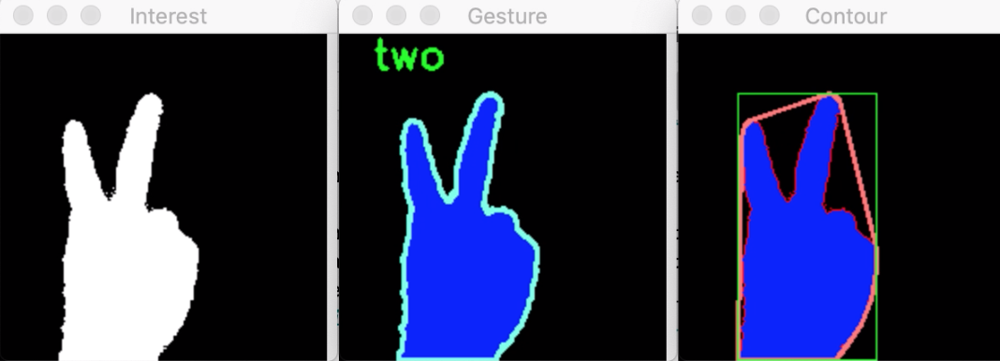 | 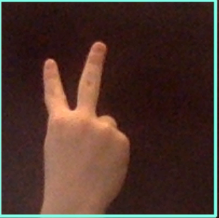 |
| Three | 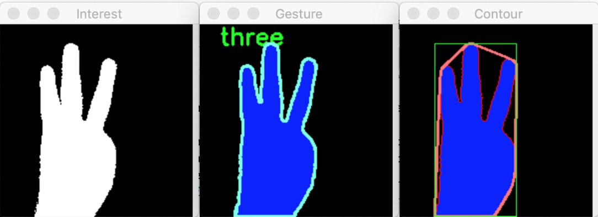 | 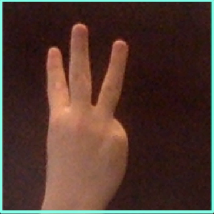 |
| Four | 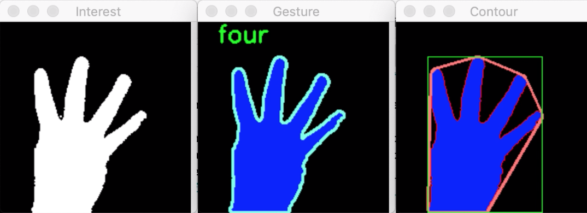 | 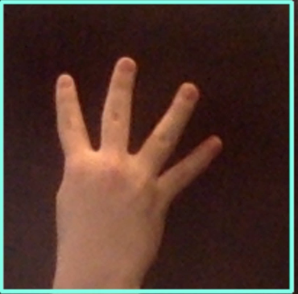 |
| Five | 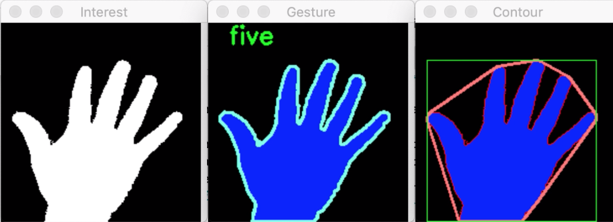 | 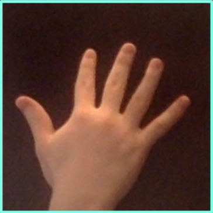 |
| Thumb Up | 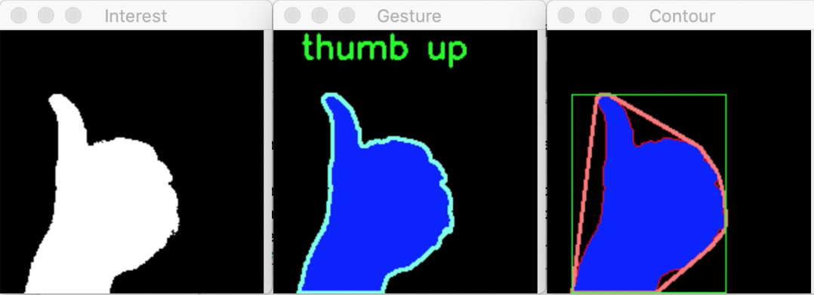 | 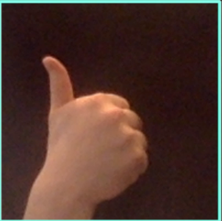 |
Discussion
Discuss your method and results:
- I think the strength of our method is easy to implement and weakness is the that the accuracy need to improve
- The method is generally successful. Again the limitation is the accuracy. Since we use our hand gesture as sample, if other one's hand is much bigger or smaller than our hand, the result could be wrong
- We may find another way to detect guesture rather than camparing the contour. For example, we could train a deep learning model to recognize different gesture
Conclusions
Detecing the guesture by contour is a basic method. Although it generally works, the high accurary cannot be guranteed
Credits and Bibliography
CS 585 Lab2. CS 585 Lab3. opencv-python-tutroals
Teammate: Yuhang Sun